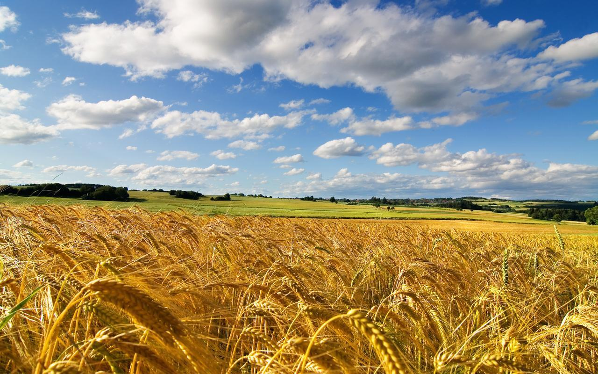

Ukraine. Immerse yourself in the beauty of endless fields, forests, and rivers of this wonderful country
The alluring world of Ukraine invites you to an exciting journey to discover the most fascinating places worth visiting. Let's highlight the most captivating routes and natural wonders that will surely leave unforgettable impressions.
Let's start our virtual journey from Kyiv - the heart of Ukraine. This city is filled with history, culture, and incredible architectural landmarks. From St. Sophia's Cathedral to the Kyiv Pechersk Lavra, every corner of the city hides secrets of the past and captivates with its beauty.
Our steps lead to Lviv, a city that charms with its atmosphere of an ancient medieval town. Prospekt Svobody, the heavenly arena for cultural events, and the labyrinth of streets perfect for wandering, will enchant you at first sight.
Let's travel to western Ukraine, to the Carpathians - a natural paradise for outdoor enthusiasts. Mountain peaks, snow-capped slopes, and crystal-clear waterfalls create an incredible atmosphere that enchants and stays in memory forever.
Another captivating destination in Ukraine is the Black Sea and its shores. Odessa, considered the pearl of the Black Sea coast, impresses with its architecture, beaches, and rich history. Every street, every building has its own unique story and charm.
All this is just a part of the incredible diversity that Ukraine offers. This country is full of places that captivate with their beauty and uniqueness. Embark on a journey, and each place you visit will be remembered forever.
Interested? Press [ORDER]. You won't regret it.